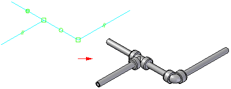

Piping Route command
Note:
This command is available only when working in XpresRoute. To access XpresRoute, click Tools→Environs→XpresRoute.
Creates a piping route that includes pipes and fittings along a selected path segment.
